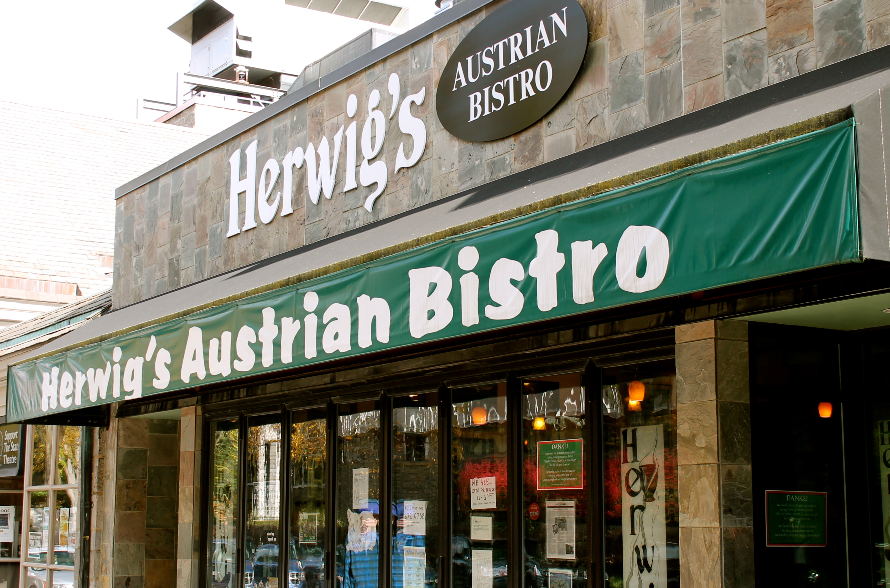
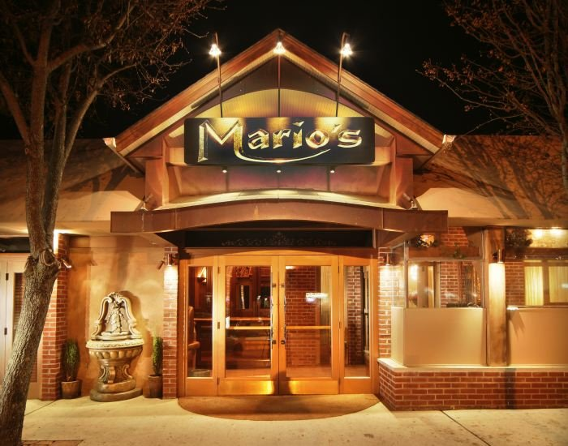
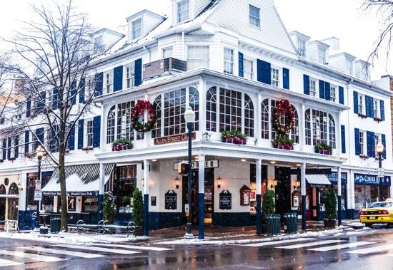
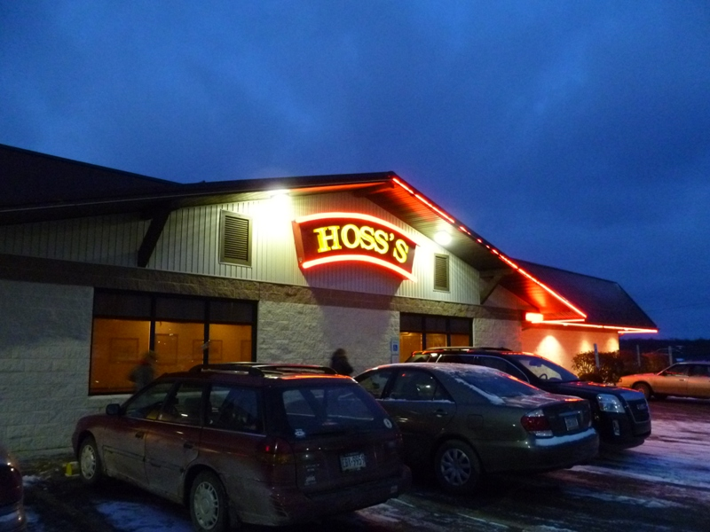
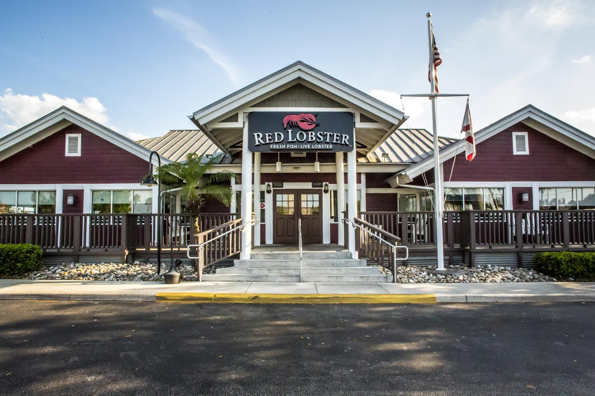

Located in the heart of central Pennsylvania, Herwig's Austrian Bistro is a unique dining experience for anyone looking to sample the tastes of authentic homestyle Austrian cuisine. Since opening its doors for business in January of 2002, Herwig's has gained a reputation for serving only the highest quality food and providing our customers with a truly unique dining experience and Gemütlichkeit.
Voted State College's Best Ethnic Restaurant Eight Years in a row by readers of State College Magazine!

Pasta from scratch, hand-tossed pizza and rotisserie wood-grilled chicken are just a few reasons why Mario’s is authentically Italian! Fresh dishes made from scratch offer a wide assortment of tasty cuisine. At the heart of it all is our specialty wood-fired pizza oven and rotisserie that imparts rustic flavors that can’t be beat!

Located in the heart of downtown State College, Pennsylvania, The Allen Street Grill offers traditional and contemporary American cuisine, late night specials and banquet facilities for weddings and events. With an incredible view of the gates to Penn State and its famous Mall, our porch is the place to dine in downtown State College. You are guaranteed a memorable occasion when you visit The Allen Street Grill. The Grill is located on the second floor of the historic Hotel State College and Company building which has served as the first center of hospitality in the Centre Region since 1855. We continue to welcome Town, Gown, and visitors from around the world with open arms.

Hoss's is not your typical steakhouse restaurant. We offer honest, delicious food – without the attitude. Hoss’s specializes in cooked-to-order steaks, chicken and seafood complemented by our famous soup, salad, bread and dessert bar. There’s something for everyone, whether you’re a family, a couple or a group.

Whether you’re a guest, employee or business partner, you can be confident that the seafood we serve is sourced in a way that is safe, ethical, responsible and sustainable. In fact, all of Red Lobster’s seafood comes from a worldwide network of trusted suppliers that follow our industry-leading quality and safety standards.